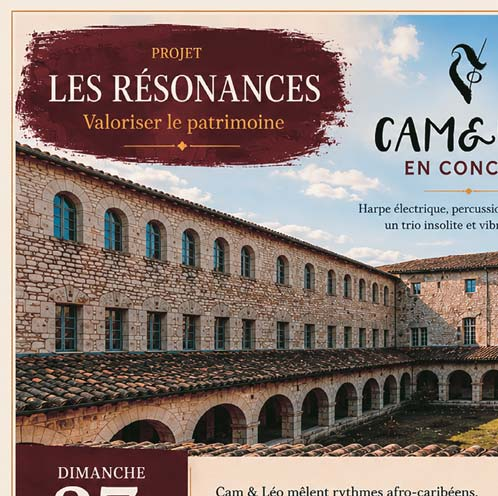
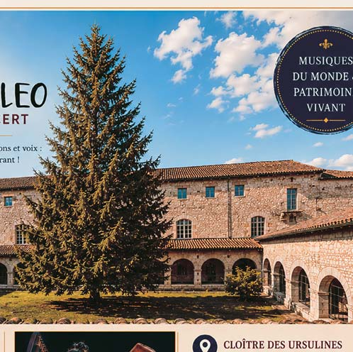

35 L es dernières élections municipales ont marqué une nouvelle étape dans la vie démocratique de notre commune. À cette occasion, nous souhai- tons tout d'abord adresser nos plus sincères remercie- ments à toutes celles et tous ceux qui nous ont accordé leur con�ance en apportant leur suffrage à notre équipe. Même si le résultat des urnes ne nous a pas permis de poursuivre la responsabilité qui nous avait été con�ée, votre soutien nous honore et nous engage. Il témoigne de l'attachement partagé aux valeurs qui ont guidé notre ac- tion au service de la commune. Durant les douze années où j'ai exercé les fonctions de maire, avec l'ensemble des élus qui m'ont accompagné, nous avons toujours placé au cœur de nos décisions l'inté- rêt général, la recherche d'un développement harmonieux de notre territoire et l'amélioration constante du cadre de vie de tous les habitants. Chaque projet, chaque investis- sement, chaque initiative a été pensé avec la volonté de préparer l'avenir tout en répondant aux attentes et aux be- soins de nos administrés. Par ailleurs, vous verrez prochainement se concrétiser deux projets structurants engagés sous le précédent mandat : le bâtiment dédié à la petite enfance, attendu en 2026, et celui affecté au périscolaire prévu pour 2027. Ces réalisa- tions illustrent la continuité de l'action publique et l'enga- gement qui a été le nôtre durant douze années au service de la commune, jusqu'au terme de nos responsabilités. Aujourd'hui, dans notre rôle d'élus de l'opposition, nous continuerons à agir avec le même esprit de responsabilité. Notre rôle sera d'examiner avec attention les décisions du nouveau conseil municipal, d'en apprécier les effets pour notre commune et de faire entendre, lorsque cela sera né- cessaire, une voix constructive et exigeante. Nous resterons particulièrement vigilants à la préservation des équilibres qui font la qualité de vie de notre commune, à la bonne gestion des �nances publiques, au développe- ment des services à la population et à la poursuite des pro- jets béné�ques à l'ensemble des habitants. Fidèles à l'engagement qui a toujours été le nôtre, nous continuerons à être à votre écoute et à défendre avec conviction les intérêts de notre commune et de ses habi- tants. Nous vous remercions à nouveau pour votre con�ance et votre soutien. Les élus de la liste « Pour Montpezat : un bilan, une équipe, un avenir » Erick LEBRUN, Christine DOUMENC, Gérard MOUNIE LA PAROLE À L’OPPOSITION LA PAROLE À L’OPPOSITION